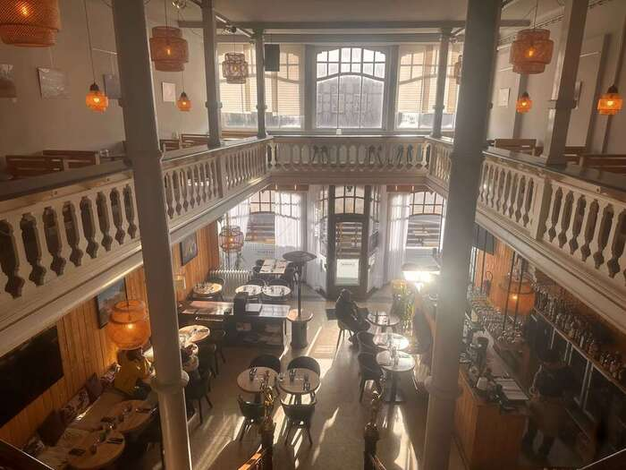

Bienvenue au Repaire des Gaumais,
Brasserie - Restaurant.
Un lieu où tradition et modernité se rencontrent pour éveiller vos papilles.
Découvrir notre menuÀ propos de nous
Bienvenue dans notre brasserie-restaurant à Virton, au cœur de la magnifique région gaumaise.
Nous sommes deux beaux-frères qui avons uni nos forces pour créer un lieu chaleureux où traditions locales et convivialité se rencontrent.
Notre établissement met à l’honneur des produits frais et de qualité, en s’inspirant des richesses culinaires de notre région.
Que vous soyez ici pour un repas en famille ou entre amis, nous vous accueillerons avec le sourire et l’amour du métier.
À bientôt dans notre brasserie !
Événements
Rejoignez-nous pour des soirées à thèmes, des concerts et d'autres événements spéciaux. Consultez notre calendrier pour ne rien manquer !
En savoir plusRéservations
Réservez votre table en ligne et assurez-vous une place dans notre cadre chaleureux.
RéserverContactez-nous
Adresse : 2 Avenue Bouvier, Virton 6760
Téléphone : +32497916702